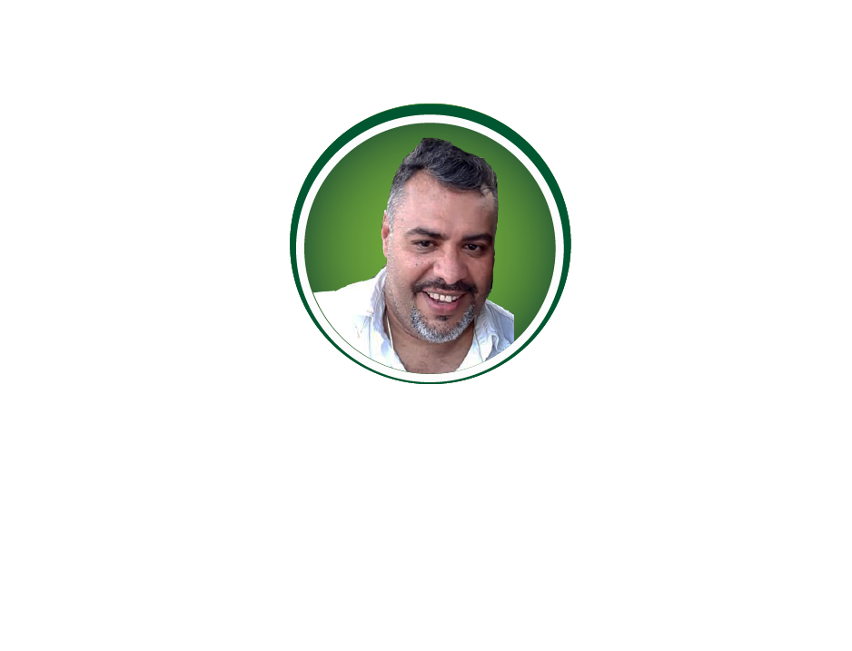

Entrenamiento de Reenfoque Emocional, Bioquímico y Espiritual
"Yo decido hacerlo diferente"
Mente dual: lo etéreo y lo tangible. Comprende cómo tus pensamientos moldean tu personalidad y tu realidad física.
Neurociencias, Psicología y Psiconeuroinmunoendocrinología: la base científica que sostiene cada práctica de ENREBE.
Mindfulness, Yoga Inbound, P.N.L., Alimentación Consciente y Terapias para transformar hábitos de vida.
Misión, visión y propósito del entrenamiento. Al finalizar reconocerás tus potencialidades únicas en todas las áreas de tu vida.
Evalúa tu estado emocional, nivel de estrés y creencias limitantes con nuestras herramientas de diagnóstico.
Conoce al equipo de profesionales certificados que acompañan tu proceso de transformación personal.
Propósito del Entrenamiento
Los pensamientos crean nuestros sentimientos, estos generan nuestras emociones y juntos forman Nuestra Personalidad. Cómo actúo, cómo reacciono, cómo miro al mundo: ¿es amigable o desafiante, abundante o carente, lleno de posibilidades u obstáculos insalvables?
Aquello que la personalidad manifiesta físicamente incide y afecta la función organísmica, alterando o equilibrando el sistema de conexiones neurológicas, las respuestas reflejas y las funciones celulares de defensa natural del cuerpo ante el movimiento externo.
Los pilares del conocimiento que sostienen ENREBE
El conjunto de prácticas que integran el método ENREBE
Atención Consciente del Dr. John Kabat-Zinn. Técnica basada en entrenamiento por repetición de ejercicios que conectan el proceso mental (pensamientos), la percepción sensorial y motora o la reacción física con el propósito de regular las emociones y la conducta para equilibrar el funcionamiento fisiológico del organismo.
Concebido por Srila Bhakti Aloka Paramadvaiti Swami. Técnica que aporta equilibrio físico neuro-sensoro-motor integrando los conceptos de espiritualidad.
Técnica que permite la exploración del sistema de creencias o introyectos que el individuo ancla en su conducta y le dicta los dogmas con los cuales expresa sus emociones y sentimientos hacia sí mismo y el campo.
Consiste en dedicar atención plena a la hora de alimentarnos. Si comemos de forma consciente, seremos capaces de escuchar nuestras sensaciones físicas (hambre, saciedad) y mentales. Es mirar los alimentos de manera distinta para disfrutarlos plena y libremente, despertando el placer en el simple acto de comer.
Conjunto de protocolos terapéuticos y rutinas personalizadas diseñadas para anclar los nuevos patrones de conducta y reforzar los cambios saludables incorporados durante el entrenamiento de 21 días.
Misión, Visión y Propósito de ENREBE
Proporcionarte de forma dinámica las herramientas para el crecimiento y la transformación personal que tanto deseas, con un entrenamiento de 21 días que reorganizará tus hábitos de pensamiento y comportamiento, obteniendo resultados progresivos desde un enfoque distinto y autodirigido.
ENREBE busca mantener en el tiempo los nuevos hábitos integrados que propendan a la persona a materializar una vida armoniosa en los aspectos personal y social, luego de la concientización e incorporación de cambios saludables en sus hábitos diarios.
Al finalizar el entrenamiento serás capaz de reconocer en ti tus potencialidades únicas que te hacen valioso, capaz y exitoso en todas las áreas de tu vida.
Herramientas de diagnóstico para tu proceso de transformación
Estos breves tests te ayudarán a identificar patrones, creencias y estados emocionales que influyen en tu bienestar. Son el punto de partida para tu entrenamiento ENREBE.
Descubre tu perfil de asertividad: cómo expresas opiniones, pones límites, manejas conflictos y te afirmas ante el mundo.
Comenzar TestEvalúa cómo vives y expresas el afecto: dar y recibir cariño, gestionar la vulnerabilidad y crear vínculos seguros.
Comenzar TestMide la calidad de tu comunicación: claridad del mensaje, escucha activa, adaptación al interlocutor y manejo del feedback.
Comenzar TestEl equipo profesional detrás de ENREBE
Profesionales certificados con formación multidisciplinaria, comprometidos con acompañarte en tu proceso de resignificación personal.
| Foto | Terapeuta | Hoja de Vida |
|---|---|---|
|
|
Msg. Adrianna Rizzo
Cofundadora · Facilitadora ENREBE
|
Especialista en desarrollo humano y bienestar integral, con amplia formación multidisciplinaria orientada al acompañamiento terapéutico y la transformación personal.
|
|
 |
Psic. Gabriel Díaz
Cofundador · Psicólogo Clínico
|
Profesional de la conducta humana con formación clínica y comunicacional, especializado en herramientas de transformación personal y sistémica.
|
|
|
Ing. Hernán Moreno
Cofundador · Coordinación & Diseño
|
Profesional técnico con vocación de servicio y enfoque en el bienestar integral, que integra la tecnología, el movimiento consciente y la transformación emocional.
|